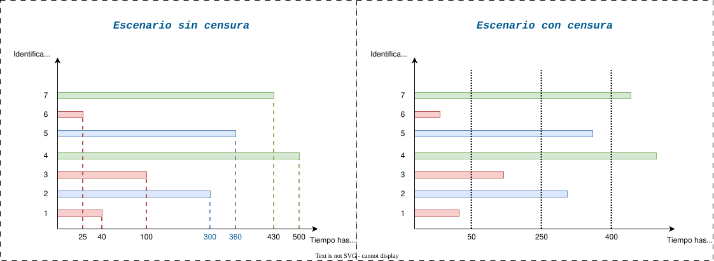

Regresión Weibull sin caja negra: verosimilitud, censura y análisis de supervivencia
¿Qué haremos hoy?
Imagina que quieres medir cuánto tiempo dura un celular antes de fallar. Esto parece un escenario trivial, pues esperas a que falle y registras el tiempo. Pero en la práctica casi nunca sabemos exactamente cuándo ocurrió la falla. Y si ahora imaginas miles o millones de dispositivos, el problema deja de ser trivial.. Si vienes del artículo anterior, Regresión logística sin caja negra: estadística, optimización y algoritmos, allí modelábamos la probabilidad de que ocurra un evento (clasificación binaria). En este artículo daremos un paso más allá: modelaremos el tiempo hasta que ese evento ocurre.
El desafío es que los datos no siempre están completamente observados. No conocemos el instante exacto en que cada dispositivo falla. A veces solo sabemos que falló entre dos inspecciones, o que aún no ha fallado al finalizar el estudio. Es decir, trabajamos con información parcial.
Para abordar este tipo de escenarios, es necesario introducir el concepto de censura. La censura ocurre cuando no se observa el tiempo exacto de falla para algunos dispositivos, sino que solo se sabe que fallaron dentro de ciertos intervalos de tiempo o que aún no han fallado al momento del análisis. Este fenómeno es común en estudios de supervivencia y análisis de confiabilidad, y requiere técnicas estadísticas específicas para modelar correctamente la información disponible.
En este post veremos cómo modelar correctamente este tipo de situaciones utilizando la regresión Weibull, entendiendo paso a paso cómo se construye la verosimilitud cuando existen datos censurados y cómo se estiman los parámetros mediante máxima verosimilitud. También, veremos que la verosimilitud no admite una solución cerrada, motivo por el cual usaremos métodos de optimización iterativos como el descenso del gradiente y el método de Newton-Raphson. Debido a su eficiencia usaremos el método Cuasi-Newton BFGS para encontrar los parámetros óptimos del modelo, además, para no profundizar en la construcción de algoritmos, usaremos la implementación de optimización de SciPy.
Ojo con el dato: Si te interesa profundizar en la construcción de algoritmos de optimización, puedes revisar el artículo anterior donde se explica detalladamente el descenso del gradiente, el descenso del gradiente con backtracking y el método de Newton-Raphson, además de mostrar las soluciones analiticas y las implementaciones desde cero en Python.
Partiremos desde la PDF de la distribución Weibull, construiremos la función de verosimilitud considerando censura por intervalos, izquierda y derecha, derivaremos la CDF y la función de supervivencia, y finalmente analizaremos la inferencia mediante el perfil de verosimilitud y el Teorema de Wilks.
Antes de continuar, observemos la diferencia entre un escenario con observación completa y uno con censura inducida. Este contraste visual nos ayudará a entender por qué la formulación matemática cambia de manera sustancial.

Un poco de contexto teórico
Para modelar el tiempo hasta que ocurre un evento necesitamos una herramienta matemática que nos permita describir cómo se comportan esos tiempos. En este artículo utilizaremos la distribución Weibull, ya que nos permite modelar tiempos de supervivencia con una variable continua[1].
¿Qué funciones vamos a usar?
Para poder trabajar correctamente con datos censurados necesitaremos tres ideas básicas:
- La función de densidad de probabilidad, que describe cómo se distribuyen los tiempos.
- La función de distribución acumulada, que nos dice la probabilidad de que el evento haya ocurrido hasta cierto momento.
- La función de supervivencia, que indica la probabilidad de que el evento todavía no haya ocurrido.
Estas funciones serán fundamentales porque, cuando existe censura, no siempre sabemos el tiempo exacto del evento. A veces solo sabemos que ocurrió dentro de un intervalo o que aún no ha ocurrido.
¿Cómo estimaremos el modelo?
Una vez definido el modelo probabilístico, estimaremos sus parámetros utilizando el principio de máxima verosimilitud, que básicamente consiste en encontrar los valores que hacen que el modelo explique mejor los datos observados. Además, debido a que el modelo no se puede resolver con una fórmula directa, emplearemos métodos numéricos de optimización.
¿Cómo evaluaremos los resultados?
Para analizar la incertidumbre y evaluar hipótesis existen varias herramientas clásicas en inferencia estadística, como el test de Wald, el test basado en el score y el test de razón de verosimilitudes [2].
Aunque estos métodos son asintóticamente equivalentes bajo ciertas condiciones, pueden comportarse de manera distinta en muestras finitas o en modelos no lineales como el Weibull.
En este artículo utilizaremos la razón de verosimilitudes, fundamentada en el Teorema de Wilks, ya que se basa directamente en la forma de la función de verosimilitud y no depende de aproximaciones locales como el método de Wald.
Esto resulta especialmente conveniente cuando el modelo es no lineal o cuando los parámetros presentan cierta asimetría, situaciones frecuentes en análisis de supervivencia.
Incorporando información adicional
Hasta ahora hemos hablado del tiempo hasta falla como si todos los dispositivos fueran iguales. Sin embargo, en la práctica casi siempre disponemos de información adicional que puede influir en ese tiempo.
En nuestro caso de estudio, los celulares estuvieron expuestos a distintos niveles de temperatura. Es razonable pensar que la temperatura podría afectar la vida útil del dispositivo.
Para incorporar este tipo de información utilizaremos covariables, es decir, variables explicativas que permiten que el modelo adapte el tiempo esperado de falla según las condiciones del entorno.
En particular, modelaremos el efecto de la temperatura sobre el parámetro de escala del modelo Weibull, lo que nos permitirá cuantificar cómo cambia el tiempo medio de vida bajo distintas condiciones.
Ejemplo: Supongamos que estudiamos cuánto tiempo tarda una persona en recuperarse después de tomar un medicamento. El tiempo hasta la recuperación no depende únicamente del fármaco, sino también podría verse influenciado por las horas de descanso, la edad o el estado general de salud. En este caso, las horas de descanso actuarían como una covariable que modifica el tiempo esperado hasta la recuperación.
Estructura de los datos
El conjunto de datos que utilizaremos no contiene el tiempo exacto de falla, sino intervalos dentro de los cuales ocurrió el evento. Esto refleja el esquema de inspección discreta mencionado anteriormente y es precisamente lo que introduce la censura.
Cada observación contiene:
- ylow: límite inferior del intervalo observado
- yupp: límite superior del intervalo observado
- temperature: nivel de temperatura (low / high)
Es decir, una muestra aleatoria de 3 dispositivos del conjunto de datos es la siguiente:
| ylow | yupp | temperature |
|---|---|---|
| 0 | 50 | low |
| 200 | 250 | low |
| 350 | 400 | high |
Ejemplo: Si ylow = 200 y yupp = 250, significa que el dispositivo falló en algún momento dentro de ese intervalo, aunque no sepamos el instante exacto. Además, si la variable temperature indica high, estaremos considerando que ese tiempo de vida ocurrió bajo condiciones de alta temperatura, lo que nos permitirá analizar si este factor influye en la duración esperada.
Enfoque analítico
En esta sección se desarrolla la formulación analítica del modelo de regresión Weibull bajo el enfoque de máxima verosimilitud. Partiremos desde la función de densidad de probabilidad y construiremos explícitamente la función de verosimilitud y su versión logarítmica, que será optimizada numéricamente.
Función de densidad de probabilidad (PDF)
Sea \( Y_i \) el tiempo hasta falla del dispositivo \( i \). Suponemos que \( Y_i \sim \text{Weibull}(\alpha, \mu_i) \), donde \( \alpha > 0 \) es el parámetro de forma y \( \mu_i > 0 \) es el parámetro de escala.
La función de densidad de probabilidad está dada por:
$$f(y_i ; \alpha, \mu_i) = \frac{\alpha}{\mu_i} \left( \frac{y_i}{\mu_i} \right)^{\alpha - 1} \exp\left[-\left( \frac{y_i}{\mu_i} \right)^\alpha \right], \quad y_i > 0 \tag{1}$$
Para incorporar el efecto de la temperatura, modelamos el parámetro de escala mediante una estructura log-lineal:
$$\log(\mu_i) = \beta_0 + \beta_1 x_i$$
donde \( x_i \) es una variable indicadora asociada a la condición experimental. De esta manera, el vector de parámetros del modelo queda definido como:
$$\theta = (\beta_0, \beta_1, \alpha)$$
Función de distribución acumulada (CDF)
A partir de la función de densidad Weibull parametrizada por \((\mu_i,\alpha)\), podemos obtener la función de distribución acumulada integrando la PDF. Recordemos que, para \(y>0\),
Por definición, la CDF es:
$$F_i(y)=\mathbb{P}(Y_i\le y)=\int_{0}^{y} f(t; \alpha, \mu_i)\,dt \tag{2}$$
$$F_i(y)=\int_{0}^{y} \frac{\alpha}{\mu_i^\alpha}\,t^{\alpha-1}\, \exp\!\left[-\left(\frac{t}{\mu_i}\right)^\alpha\right]\,dt$$
Aplicando la técnica de cambio de variable para resolver la integración, se tiene que: $$z=\left(\frac{t}{\mu_i}\right)^\alpha \quad \Rightarrow\quad dz=\frac{\alpha}{\mu_i^\alpha}\,t^{\alpha-1}\,dt$$
Con este cambio, la parte diferencial se simplifica exactamente. Además, los límites cambian como: $$t=0 \Rightarrow z=0,\qquad t=y \Rightarrow z=\left(\frac{y}{\mu_i}\right)^\alpha.$$
Entonces la integral se transforma en:
$$F_i(y)=\int_{0}^{(y/\mu_i)^\alpha} e^{-z}\,dz$$
Finalmente, integrando obtenemos que la función de distribución acumulada para \(y>0\) es:
$$ F_i(y)=\left[-e^{-z}\right]_{0}^{(y/\mu_i)^\alpha} $$ $$ =-e^{-(y/\mu_i)^\alpha}-(-1) $$ $$ =1-\exp\!\left[-\left(\frac{y}{\mu_i}\right)^\alpha\right] $$
Entonces, se tiene que para \(y>0\),
$$F_i(y)=1-\exp\!\left[-\left(\frac{y}{\mu_i}\right)^\alpha\right] \tag{3}$$
Función de supervivencia (SF)
La función de supervivencia se define como la probabilidad de que el tiempo de vida exceda un cierto valor \(y\):
$$S_i(y)=\mathbb{P}(Y_i>y)=1-F_i(y) \tag{4}$$
Sustituyendo (3) en (4), obtenemos:
$$S_i(y)=\exp\!\left[-\left(\frac{y}{\mu_i}\right)^\alpha\right], \quad y>0 \tag{5}$$
Reexpresión en términos del predictor lineal
Recordando que el parámetro de escala se modela como \( \mu_i = \exp(\eta_i) \), donde \( \eta_i = \beta_0 + \beta_1 x_i \), es conveniente reescribir ciertos términos de la densidad.
En particular,
$$\left(\frac{y}{\mu_i}\right)^\alpha = y^\alpha \exp(-\alpha \eta_i)$$
Definimos entonces la cantidad auxiliar:
$$A_i(y) = \left(\frac{y}{\mu_i}\right)^\alpha \tag{6}$$
Entonces, reemplazando (6) en (1), la función de densidad puede expresarse como:
$$f(y_i)= \alpha\, y_i^{\alpha-1} \exp(-\alpha \eta_i) \exp(-A_i(y_i)) \tag{7}$$
De manera similar, la función de distribución acumulada y la función de supervivencia se reexpresan como:
$$F_i(y)=1-\exp(-A_i(y)) \tag{8}$$
$$S_i(y)=\exp(-A_i(y)) \tag{9}$$
Función de verosimilitud con censura
En presencia de censura por intervalo y censura derecha, la contribución individual al likelihood depende del tipo de información observada.
Teniendo en cuenta las contribuciones individuales, la función de verosimilitud se expresa como:
- Censura izquierda (0, yupp,i):
$$\mathbb{P}(Y_i \le y_{\text{upp},i}) = F_i(y_{\text{upp},i}).$$
- Censura por intervalo (ylow,i, yupp,i):
$$\mathbb{P}(y_{\text{low},i} \lt Y_i \le y_{\text{upp},i}) = F_i(y_{\text{upp},i}) - F_i(y_{\text{low},i})$$
- Censura derecha (ylow,i, ∞):
$$\mathbb{P}(Y_i > y_{\text{low},i}) = 1 - F_i(y_{\text{low},i})$$
Definiendo indicadores apropiados para cada tipo de censura, la función de verosimilitud total se expresa como:
$$L(\beta_0,\beta_1,\alpha) = \prod_{i=1}^{n} F_i(y_{\text{upp},i})^{\mathbf{1}_{(lc_i=1,rc_i=0)}} $$ $$ \times \left[ F_i(y_{\text{upp},i}) - F_i(y_{\text{low},i}) \right]^{\mathbf{1}_{(lc_i=0,rc_i=0)}} $$ $$ \times \left[ 1 - F_i(y_{\text{low},i}) \right]^{\mathbf{1}_{(lc_i=0,rc_i=1)}} $$
Reemplazando en base a (8), cada término de la verosimilitud se puede reescribir en función de \(A_i(y)\):
$$ L(\beta_0,\beta_1,\alpha) = \prod_{i=1}^{n} \left[ 1-\exp(-A_i(y_{\text{upp},i})) \right]^{\mathbf{1}_{(lc_i=1,rc_i=0)}} $$ $$ \times \left[ \exp(-A_i(y_{\text{low},i})) - \exp(-A_i(y_{\text{upp},i})) \right]^{\mathbf{1}_{(lc_i=0,rc_i=0)}} $$ $$ \times \left[ \exp(-A_i(y_{\text{low},i})) \right]^{\mathbf{1}_{(lc_i=0,rc_i=1)}} \tag{10} $$
Nota: Los indicadores lci (left censoring) y rci (right censoring) identifican el tipo de censura asociado a la observación i. En particular, lci=1 indica censura izquierda, rci=1 indica censura derecha, y cuando lci=0 y rci=0 se trata de censura por intervalo. Estos indicadores permiten escribir la función de verosimilitud en forma compacta mediante potencias que activan únicamente la contribución correspondiente a cada tipo de observación.
Función de log-verosimilitud
En la práctica, rara vez trabajamos directamente con la función de verosimilitud. Al tratarse de un producto de muchas probabilidades, su valor puede volverse extremadamente pequeño a medida que aumenta el número de observaciones, lo que dificulta su interpretación y cálculo numérico.
Para evitar este problema, es común trabajar con la log-verosimilitud. Al aplicar el logaritmo, el producto de probabilidades se transforma en una suma, lo que simplifica los cálculos y hace más estable el proceso de optimización, sin alterar el valor del parámetro que maximiza la función.
Es decir, la función de log-verosimilitud se define como el logaritmo de la función de verosimilitud: $$ \ell(\beta_0,\beta_1,\alpha) = \log L(\beta_0,\beta_1,\alpha) $$
Reemplazando en base a (10) en la definición de log-verosimilitud, obtenemos: $$ \ell(\beta_0,\beta_1,\alpha) = \sum_{i \in \mathcal{L}} \log\!\left(1-\exp\!\left[-A_i(y_{\text{upp},i})\right]\right) $$ $$ + \sum_{i \in \mathcal{I}} \log\!\left( \exp\!\left[-A_i(y_{\text{low},i})\right] - \exp\!\left[-A_i(y_{\text{upp},i})\right] \right) $$ $$ - \sum_{i \in \mathcal{R}} A_i(y_{\text{low},i}) $$
Donde los conjuntos \(\mathcal{L}\), \(\mathcal{I}\) y \(\mathcal{R}\) corresponden a los índices de las observaciones con censura izquierda, censura por intervalo y censura derecha, respectivamente. Es decir, $$ \mathcal{L}=\{i: l_{c,i}=1,\ r_{c,i}=0\} $$ $$ \mathcal{I}=\{i: l_{c,i}=0,\ r_{c,i}=0\} $$ $$ \mathcal{R}=\{i: l_{c,i}=0,\ r_{c,i}=1\} $$
Verosimilitud
Cuando construimos un modelo estadístico, lo que realmente queremos es encontrar los valores de sus parámetros que mejor expliquen los datos que hemos observado.
La verosimilitud es justamente la herramienta que nos ayuda a hacer eso. Nos dice qué tan bien un conjunto específico de parámetros se ajusta a los datos.
Podemos pensar en ella como una medida de qué tan “compatible” es el modelo (con ciertos parámetros) con la información que tenemos. Si la verosimilitud es alta, significa que esos parámetros hacen que los datos observados sean más coherentes con el modelo.
El objetivo entonces es elegir los parámetros que hagan que la verosimilitud sea lo más grande posible. A este procedimiento se le conoce como estimación por máxima verosimilitud.
Si suena algo abstracto, veamos un ejemplo:
Imagina que tienes un pequeño negocio de delivery de café. Notas que mientras más lejos está el cliente, más tiempo tarda el pedido en llegar.
Decides modelar el tiempo de entrega con una regla muy simple:
$$ \text{Tiempo} = \beta_0 + \beta_1 \times \text{Distancia} $$ Donde:
- \( \beta_0 \) es el tiempo base (preparar el café, salir del local, etc.)
- \( \beta_1 \) es cuánto aumenta el tiempo por cada kilómetro adicional.
Para hacer inferencia o crear predicciones necesitaremos encontrar los valores de \( \beta_0 \) y \( \beta_1 \) que mejor expliquen los tiempos de entrega que has observado en tus pedidos anteriores.
Para hacer esto, calcularemos la verosimilitud de los datos observados para cada combinación de valores de \( \beta_0 \) y \( \beta_1 \), y seleccionaremos los valores que maximizan esa verosimilitud.
Intervalos de confianza
Para analizar la incertidumbre asociada a los parámetros estimados, es común construir intervalos de confianza basados en el perfil de verosimilitud. Este método se fundamenta en el Teorema de Wilks, que establece que bajo ciertas condiciones, la razón de verosimilitudes sigue una distribución chi-cuadrado asintótica.
Antes profundizar en la construcción de intervalos de confianza, entendamos dos términos claves, que son el nivel de confianza y el nivel de significancia.
El nivel de confianza es la probabilidad de que el intervalo de confianza contenga el valor verdadero del parámetro.
Por ejemplo, un nivel de confianza del 95% significa que si repitiéramos el experimento muchas veces, aproximadamente el 95% de los intervalos construidos a partir de esas muestras incluirían el valor real del parámetro.
El nivel de significancia, por otro lado, es la probabilidad de rechazar la hipótesis nula cuando esta es verdadera. En el contexto de intervalos de confianza, un nivel de significancia del 5% se relaciona con un nivel de confianza del 95%, ya que el intervalo se construye para incluir el valor del parámetro con una probabilidad del 95%, dejando un 5% de probabilidad para que el valor quede fuera del intervalo.
Matematicamente, el nivel de confianza y el nivel de significancia están relacionados por la siguiente expresión: $$\text{Nivel de confianza} = 1 - \text{Nivel de significancia}$$
$$ \widehat{\theta} = (\widehat{\beta}_0,\widehat{\beta}_1,\widehat{\alpha}) = \arg\max_{\beta_0,\beta_1,\alpha} \ell(\beta_0,\beta_1,\alpha) $$
$$ \text{Para } \beta_0: \qquad PL(\beta_0) = \max_{\beta_1,\alpha} \ell(\beta_0,\beta_1,\alpha) $$ $$ \left(\widehat{b}_1(\beta_0),\widehat{\alpha}(\beta_0)\right) = \arg\max_{\beta_1,\alpha} \ell(\beta_0,\beta_1,\alpha) $$
$$ D_P(\beta_0) = 2\left( \ell(\widehat{\theta}) - PL(\beta_0) \right) \;\sim\; \chi^2_{1} $$
$$ \mathbb{P}\!\left( D_P(\beta_0) \le \chi^2_{1,1-\gamma} \right) = 1-\gamma $$ $$ \Longrightarrow \quad C_{\gamma} = \left\{ \beta_0 : D_P(\beta_0) \le \chi^2_{1,1-\gamma} \right\} $$
$$ \beta_0 : D_P(\beta_0) \le \chi^2_{1,1-\gamma} \quad \Longleftrightarrow \quad PL(\beta_0) \ge \ell(\widehat{\theta}) - \frac{1}{2} \chi^2_{1,1-\gamma} $$
Referencias
- Casella, G., & Berger, R. L. (2002). Statistical Inference (2nd ed.). Duxbury Press. Sección de distribuciones discretas. [PDF]
- Klein, J. P., & Moeschberger, M. L. (2003). Survival Analysis: Techniques for Censored and Truncated Data (2nd ed.). Springer. [Springer]
Algoritmos de optimización
En esta sección mostraremos los algoritmos en pseudocódigo para cada uno de los métodos de optimización.
Newton-Raphson
Entrada:
- Parámetros iniciales: β^(0)
- Tolerancia de convergencia: ε
- Máximo de iteraciones: max_iter
Salida:
- Parámetros estimados: β^(*)
Algoritmo:
1. Establecer t = 0
2. Repetir hasta la convergencia o t >= max_iter:
a. Calcular gradiente: g^(t) = ∇L(β^(t))
b. Calcular Hessiano: H^(t) = H(β^(t))
c. Actualizar parámetros:
delta = (H^(t))^(-1) * g^(t)
β^(t+1) = β^(t) - delta
d. Verificar convergencia:
Si ||β^(t+1) - β^(t)|| < ε, entonces salir
e. Incrementar t: t = t + 1
3. Retornar β^(*) = β^(t)Descenso de Gradiente
Entrada:
- Parámetros iniciales: β^(0)
- Tasa de aprendizaje: α
- Tolerancia de convergencia: ε
- Máximo de iteraciones: max_iter
Salida:
- Parámetros estimados: β^(*)
Algoritmo:
1. Establecer t = 0
2. Repetir hasta la convergencia o t >= max_iter:
a. Calcular gradiente: g^(t) = ∇L(β^(t))
b. Actualizar parámetros:
β^(t+1) = β^(t) - α * g^(t)
c. Verificar convergencia:
Si ||β^(t+1) - β^(t)|| < ε, entonces salir
d. Incrementar t: t = t + 1
3. Retornar β^(*) = β^(t)Descenso de Gradiente con Backtracking
Entrada:
- Parámetros iniciales: β^(0)
- Tasa de aprendizaje inicial: α_0
- Parámetro de disminución suficiente: c (0 < c < 1)
- Factor de reducción del tamaño del paso: ω (0 < ω < 1)
- Tolerancia de convergencia: ε
- Máximo de iteraciones: max_iter
Salida:
- Parámetros estimados: β^(*)
Algoritmo:
1. Establecer t = 0
2. Repetir hasta la convergencia o t >= max_iter:
a. Calcular gradiente: g^(t) = ∇L(β^(t))
b. Establecer α = α_0
c. Mientras L(β^(t) - α * g^(t)) > L(β^(t)) - c * α * ||g^(t)||^2:
α = ω * α
d. Actualizar parámetros:
β^(t+1) = β^(t) - α * g^(t)
e. Verificar convergencia:
Si ||β^(t+1) - β^(t)|| < ε, entonces salir
f. Incrementar t:
t = t + 1
3. Retornar β^(*) = β^(t)Implementación en Python
A continuación, se presenta una implementación práctica de los algoritmos de optimización discutidos anteriormente utilizando Python. Utilizaremos bibliotecas populares como NumPy para las operaciones numéricas y Matplotlib para la visualización de resultados.
A fin de no expandir demasiado este artículo, el código de la implementación completa está disponible desde Google Colab en el siguiente enlace: Implementación de Algoritmos de Optimización en Python
Comparación de complejidad
En esta sección se presenta una comparación entre los métodos de optimización implementados desde el punto de vista del costo computacional. Primero, se analiza la complejidad temporal a partir del comportamiento observado durante la ejecución del notebook. Posteriormente, se abordará la complejidad espacial mediante un análisis teórico.
Complejidad temporal
La figura siguiente presenta una comparación empírica de los métodos de optimización analizados, combinando la evolución de la función de pérdida con distintas métricas de costo computacional. En conjunto, estas visualizaciones permiten evaluar no solo la velocidad de convergencia, sino también la complejidad temporal efectiva de cada método.


En la subfigura (a) se observa que el método de Newton–Raphson alcanza un valor estable de la función de pérdida en un número reducido de iteraciones, lo que refleja su rápida convergencia local. Sin embargo, esta métrica por sí sola no captura el costo computacional real del método.
Por otro lado, la subfigura (b) muestra que el costo computacional por iteración de Newton–Raphson es considerablemente mayor que el de los métodos basados en gradiente, debido al cálculo del Hessiano y la resolución de un sistema lineal en cada paso. Este comportamiento se refleja de forma acumulativa en la subfigura (c), donde el tiempo de ejecución total crece más rápidamente para Newton–Raphson, a pesar de requerir menos iteraciones.
Finalmente, la subfigura (d) resume el tiempo total de ejecución hasta alcanzar la convergencia, evidenciando que, en este experimento, los métodos basados en gradiente ofrecen un mejor compromiso entre estabilidad y costo computacional, especialmente cuando se consideran escenarios de mayor escala.
En conclusión, aunque el método de Newton-Raphson converge rápidamente en términos de iteraciones, su alto costo computacional por iteración lo hace menos eficiente en la práctica en comparación con los métodos de descenso de gradiente, especialmente en problemas de gran escala.
Complejidad espacial
Desde el punto de vista teórico, la complejidad espacial de cada método de optimización puede analizarse en función de las estructuras de datos que deben almacenarse durante la ejecución del algoritmo.
En el caso del método de Newton-Raphson, es necesario almacenar el Hessiano de la función de pérdida, que es una matriz de tamaño \( p \times p \), donde \( p \) es el número de parámetros del modelo. Esto implica una complejidad espacial de \( \mathcal{O}(p^2) \). Además, se deben almacenar el gradiente y los parámetros, lo que añade una complejidad adicional de \( \mathcal{O}(p) \). Por lo tanto, la complejidad espacial total del método de Newton-Raphson es: $$ \mathcal{O}(p^2) + \mathcal{O}(p) = \mathcal{O}(p^2) $$
En contraste, los métodos de descenso de gradiente y descenso de gradiente con backtracking solo requieren almacenar el gradiente y los parámetros, ambos de tamaño \( p \). Por lo tanto, la complejidad espacial de estos métodos es: $$ \mathcal{O}(p) + \mathcal{O}(p) = \mathcal{O}(p) $$
En resumen, desde el punto de vista de la complejidad espacial, los métodos basados en gradiente son más eficientes que el método de Newton-Raphson, especialmente cuando el número de parámetros \( p \) es grande.
Demo
Explicar el comportamiento de los algoritmos es fundamental, pero observar cómo estos se traducen en una decisión concreta permite cerrar el vínculo entre teoría y práctica. Por ello, se presenta a continuación una demo basada en un conjunto de datos real, donde un modelo de regresión logística previamente entrenado realiza inferencia sobre una nueva muestra.
El objetivo de esta demo no es evaluar el desempeño predictivo del modelo, sino ilustrar cómo los parámetros obtenidos mediante distintos métodos de optimización se utilizan para calcular el valor lineal η = xTβ, transformarlo en una probabilidad mediante la función sigmoide y, finalmente, producir una decisión binaria.
Para este ejemplo se emplea el German Credit Dataset (UCI) únicamente como vehículo práctico. A partir de las características de una nueva observación, se aplica el mismo proceso de estandarización usado durante el entrenamiento y se evalúa la probabilidad asociada a la clase positiva, evidenciando que la inferencia es computacionalmente sencilla en comparación con el proceso de optimización que permitió estimar los parámetros del modelo.
Debido a que explicarlo esta bien, pero mostrarlo es mejor, he creado una demo interactiva donde puedes subir una foto y el modelo entrenado te dirá la edad y género estimados. Puedes probarla a continuación:
La muestra es generada al dar clic corresponde a una observación aleatoria del German Credit Dataset, ya que en total se requieren 24 características de la persona..
Muestra de entrada
Selecciona una muestra aleatoria del conjunto de datos y observa cómo el modelo realiza la inferencia utilizando los parámetros optimizados por cada método.
Clase real (1 = Riesgo alto de crédito, 0 = Buen pagador)
y = --
Características de la persona
Resultado de inferencia
Newton–Raphson
Combinación lineal
η = --
Probabilidad estimada
p = --
Decisión binaria
Predicción: --
Gradient Descent
Combinación lineal
η = --
Probabilidad estimada
p = --
Decisión binaria
Predicción: --
Gradient Descent (Backtracking)
Combinación lineal
η = --
Probabilidad estimada
p = --
Decisión binaria
Predicción: --
Umbral de decisión (τ)
Si p ≥ τ, la observación se clasifica como Riesgo alto de crédito.
Este control ajusta qué tan estricto es el modelo.
A la izquierda: el modelo es más permisivo y detecta más casos de riesgo.
A la derecha: el modelo es más estricto y solo señala riesgo cuando está muy seguro.
Cierre
En este artículo hemos recorrido de forma integral el proceso de formulación, análisis y resolución de un problema de optimización aplicado al contexto de Aprendizaje de Máquina, poniendo énfasis en los fundamentos matemáticos y algorítmicos que subyacen a métodos ampliamente utilizados en la práctica.
A lo largo del desarrollo comparamos distintos métodos iterativos de optimización, como Gradient Descent, Gradient Descent con Backtracking y Newton-Raphson, analizando sus diferencias no solo desde el punto de vista computacional, sino también desde su interpretación estadística y su impacto en la convergencia hacia una misma función objetivo.
Uno de los objetivos centrales fue evitar el tratamiento de estos algoritmos como una caja negra, mostrando explícitamente cómo surgen la función de pérdida, la gradiente y el Hessiano, y cómo estas cantidades guían el proceso de optimización. Este enfoque permite comprender por qué distintos métodos pueden producir trayectorias diferentes durante el entrenamiento, aun cuando todos convergen al mismo óptimo.
La demo interactiva que acompaña este artículo permite visualizar este comportamiento de forma intuitiva, destacando que el umbral de decisión es una elección realizada en inferencia y no forma parte del proceso de entrenamiento. Esto refuerza la separación conceptual entre el aprendizaje del modelo y su uso práctico en escenarios reales.
Si te interesa profundizar en temas como Optimización Numérica, Estadística Computacional, Machine Learning y Deep Learning desde una perspectiva clara y fundamentada, te invito a conectar por LinkedIn y seguir las próximas publicaciones y proyectos de este portafolio. En futuras entregas exploraremos cómo estos algoritmos se integran en pipelines reales y entornos cloud, combinando teoría, implementación y despliegue.
¡Gracias por leer y feliz aprendizaje algorítmico!